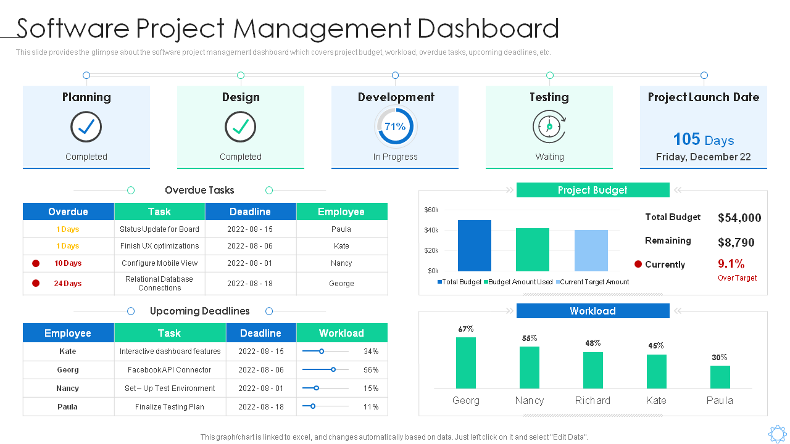
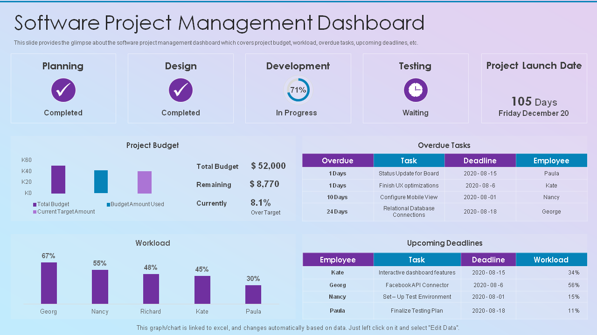
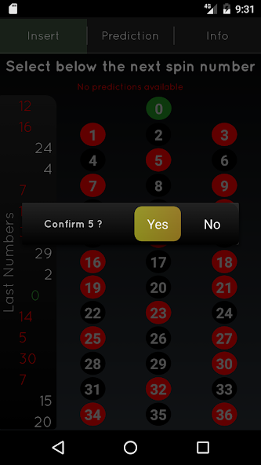
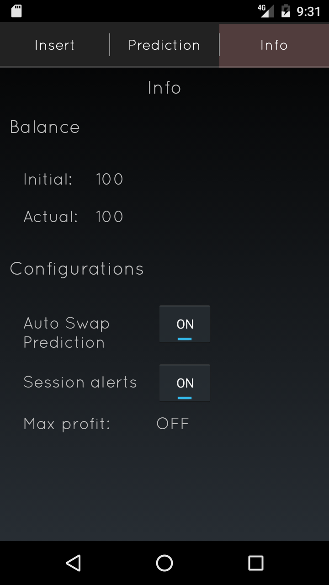
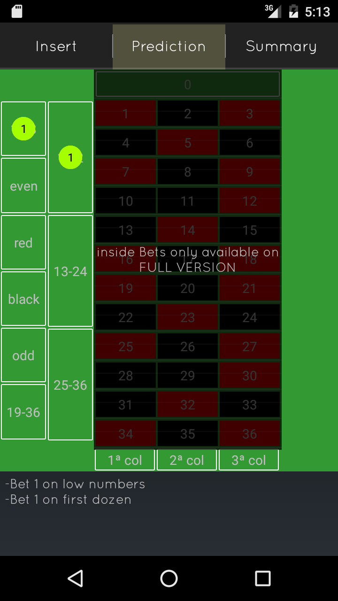

FX Project — Industrial Management ERP Custom ERP system for factory planning, tracking and logistics


A freelance ERP solution built to improve planning efficiency, time tracking, and business logistics for an industrial client. The system was designed to address a range of operational demands across the factory floor.
The solution comprises three core components:
- Backoffice Application: Allows managers to control and monitor all factory operations from a centralized interface.
- Factory Floor App: Enables operators to log real-time events related to each component they work on.
- API & Integration Layer: Facilitates seamless communication between both applications and the database, ensuring consistent and reliable data flow across the system.
Stack: .NET 8, MAUI, Entity Framework Core, SQL Server
Public Transport App – Real-Time Routes and Stop Information Mobile app and backend API for public transit operators across Portugal


I lead the development and maintenance of a mobile application and backend API serving multiple public transport operators, including Carris. The platform delivers real-time information on routes, lines, wait times, and nearby stops.
Originally built around static schedule data, the app has since evolved to support live arrival estimates and vehicle tracking, significantly enhancing the passenger experience.
The backend infrastructure continuously synchronizes data from each transport operator, processes it, and exposes it in real time through a public API.
Stack: Xamarin, .NET Core, Entity Framework Core, SQL Server
View on Google PlayGTFS Feed Generation — General Transit Feed Specification Standardized transit data feeds consumed by Google Maps and other services

An extension of the Public Transport platform, this project focuses on generating standardized GTFS feeds from transit data provided by multiple urban mobility operators.
GTFS allows third-party services — such as Google Maps — to consume structured transit data and present users with accurate information on vehicle status, trip history, and stop/route details.
Each implementation requires careful adaptation to the client's data model, ensuring accurate transformation and full compliance with the GTFS specification.
Stack: .NET 8, Entity Framework Core, SQL Server
Carris GTFS FeedBlackjack Wizard Card counting assistant for blackjack players


A personal project born from an interest in blackjack card counting theory. What started as a learning exercise evolved into a fully functional mobile application.
The app assists users in tracking their blackjack sessions by logging dealt cards and providing real-time card counting guidance based on established strategies.
Stack: Java, Kotlin, Firebase
View on Google PlayRoulette Wizard Real-time roulette session tracker with betting strategy



Built on the same concept as Blackjack Wizard, this app enables users to track roulette sessions in real time and receive data-driven betting suggestions.
The app implements a Martingale-based strategy, offering configurable suggestions for both outside and inside bets, allowing users to tailor the risk level to their preference.
My first published application on the Google Play Store — the free version has surpassed 5,000 downloads.
Stack: Java, Firebase
View on Google Play